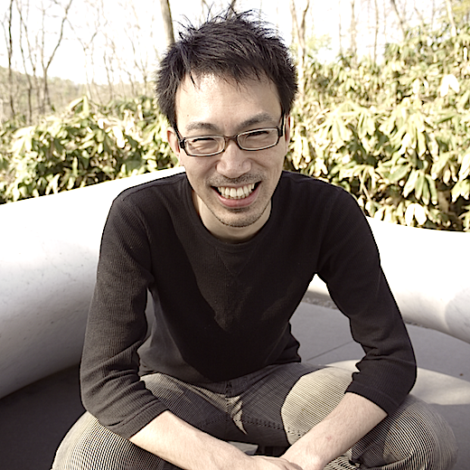

TAKIGAWA, Ichigaku
-
Institute for Liberal Arts and Sciences,
Kyoto University -
Institute for Chemical Reaction Design and Discovery (ICReDD)
Hokkaido University
Contact
Center for Innovative Research and Education in Data Science (CIREDS)
Institute for Liberal Arts and Sciences, Kyoto University
302 Konoe-kan, 69 Konoe-cho, Sakyo-ku, Kyoto 606-8315 Japan.
Profile
- Author Profile (Google Scholar)
- ResearcherID (Thomson Reuters)
- researchmap (JST)
- ORCID | DBLP | PubMed | scopus | semanticscholar | wikidata
Highlight
- Top reviewer (Top 10%), NeurIPS 2022. link
- Distinguished PC (Top 3%), IJCAI-ECAI 2022. link
- Outstanding reviewer (Top 10%), ICML 2022. link
- Highlighted reviewer, ICLR 2022. link
- Expert reviewer, ICML 2021. link
- Top reviewer (Top 33%), ICML 2020. link
- Best reviewer, NeurIPS 2019. link
- Active reviewer, IJCAI 2019. link
- Top reviewer (Top 30%), NeurIPS 2018. link
Talk
Work
- DrawMolToMPL: RDKit mol drawing with matplotlib
https://github.com/itakigawa/mpl_rdkit_utils - ChemProp in PyTorch Geometric
https://github.com/itakigawa/pyg_chemprop - Listing all frequent subgraph-substring pairs in graph-string pairs
https://github.com/itakigawa/grasp
Education
- 2004: Ph.D., Hokkaido University, Graduate School of Engineering
- 2001: M.Eng., Hokkaido University, Graduate School of Engineering
- 1999: B.Eng., Hokkaido University, Faculty of Engineering
Appointments
- Feb 2023 - present: Program-Specific Professor, Center for Innovative Research and Education in Data Science, Institute for Liberal Arts and Sciences, Kyoto University
- Feb 2023 - present: Visiting Scientist, RIKEN Center for Advanced Intelligence Project
- Apr 2019 - present: Principal Investigator, Institute for Chemical Reaction Design and Discovery (WPI-ICReDD), Hokkaido University
- Apr 2019 - Jan 2023: Research Scientist, RIKEN Center for Advanced Intelligence Project
- Oct 2014 - Mar 2019: Associate Professor, Graduate School of Information Science and Technology, Hokkaido University
- Jan 2012 - Sep 2014: Assistant Professor, Creative Research Institution (CRIS), Hokkaido University
- May 2010 - Aug 2010: Visiting Researcher, Bioinformatics Program, Boston University
- Apr 2007 - Dec 2011: Assistant Professor, Division of Bioinformatics and Chemical Genomics, Graduate School of Pharmaceutical Science, Kyoto University
- Aug 2005 - Dec 2011: Assistant Professor, Bioinformatics Center, Institute for Chemical Research, Kyoto University
- Apr 2005 - Jul 2005: Research Assistant Professor, Bioinformatics Center, Institute for Chemical Research, Kyoto University
- Apr 2004 - Mar 2005: Postdoctoral Fellow, Graduate School of Information Science and Technology, Hokkaido University
- Apr 2002 - Feb 2003: Adjunct Instructor, Sapporo University
- Sep 2001 - Sep 2001: Adjunct Instructor, Otaru University of Commerce
Grants
- Jul 2021 - Mar 2025: Co-PI, Grants-in-Aid for Scientific Research #21375759
(Ministry of Education, Culture, Science and Technology) - Apr 2021 - Mar 2025: PI, Grants-in-Aid for Scientific Research #21K12041
(Ministry of Education, Culture, Science and Technology) - Nov 2020 - Mar 2025: Co-PI, Grants-in-Aid for Scientific Research #20H05962
(Ministry of Education, Culture, Science and Technology) - Sep 2020 - Mar 2025: Co-PI, Grants-in-Aid for Scientific Research #20H00323
(Ministry of Education, Culture, Science and Technology) - Apr 2020 - Mar 2025: Co-PI, Grants-in-Aid for Scientific Research #20H00605
(Ministry of Education, Culture, Science and Technology) - Apr 2020 - Aug 2020: Co-PI, Grants-in-Aid for Scientific Research #20H00323
(Ministry of Education, Culture, Science and Technology) - Apr 2018 - Mar 2020: Co-PI, Grants-in-Aid for Scientific Research #15H05711
(Ministry of Education, Culture, Science and Technology) - Jul 2017 - Mar 2021: PI, Grants-in-Aid for Scientific Research #17K19953
(Ministry of Education, Culture, Science and Technology) - Apr 2017 - Mar 2021: PI, Grants-in-Aid for Scientific Research #17H01783
(Ministry of Education, Culture, Science and Technology) - Apr 2016 - Mar 2017: PI, Grants-in-Aid for Scientific Research #16K13852
(Ministry of Education, Culture, Science and Technology) - Dec 2015 - Mar 2019: PI, JST PRESTO #JPMJPR15N9
(Japan Science and Technology Agency) - Apr 2014 - Mar 2017: PI, Grants-in-Aid for Scientific Research #26330242
(Ministry of Education, Culture, Science and Technology) - Apr 2014 - Mar 2016: PI, Grants-in-Aid for Scientific Research #26120503
(Ministry of Education, Culture, Science and Technology) - Apr 2013 - Mar 2016: Co-PI, Grants-in-Aid for Scientific Research #25280079
(Ministry of Education, Culture, Science and Technology) - Apr 2011 - Mar 2014: PI, Grants-in-Aid for Scientific Research #23710233
(Ministry of Education, Culture, Science and Technology) - Apr 2008 - Mar 2011: PI, Grants-in-Aid for Scientific Research #20700134
(Ministry of Education, Culture, Science and Technology) - Oct 2007 - Sep 2010: Co-PI, Bioinformatics Research and Development (BIRD)
(Japan Science and Technology Agency) - Apr 2006 - Mar 2008: PI, Grants-in-Aid for Scientific Research #10374597
(Ministry of Education, Culture, Science and Technology) - Apr 2005 - Mar 2006: PI, Start-up Research Funding for Young Investigators
(Kyoto University)
Memberships
- IEEE (The Institute for Electrical and Electronics Engineers), Senior Member
- ACM (Association for Computing Machinery)
- JSAI (The Japanese Society for Artificial Intelligence)
- JSBi (Japanese Society for Bioinformatics)
Academic Activities
- Reviewer (Top reviewer, Top 10%), Neural Information Processing Systems (NeurIPS) 2022, New Orleans, USA, Nov 28-Dec 9, 2022.
- Program Committee (Distinguised PC, Top 3%), The 31st International Joint Conference on Artificial Intelligence (IJCAI-ECAI 2022), Vienna, Austria, July 23-29, 2022.
- Reviewer (Outstanding reviewer, Top 10%), The International Conference on Machine Learning (ICML) 2022, Baltimore, USA, July 17-23, 2022.
- Reviewer (Highlighted reviewer), The International Conference on Learning Representations (ICLR 2022), Virtual, Apr 25-29, 2022.
- Reviewer, Neural Information Processing Systems (NeurIPS) 2021, Virtual, Dec 6-14, 2021.
- Reviewer (Expert reviewer), The 38th International Conference on Machine Learnig (ICML 2021), Jul 18-24, Virtual, 2021
- Program Committee, The 30th International Joint Conference on Artificial Intelligence (IJCAI 2021), Aug 21-26, Montreal, Canada, 2021
- Reviewer, International Conference on Learning Representations (ICLR2021), Vienna, Austria, May 4-8, 2021
- Reviewer, The 24th International Conference on Artificial Intelligence and Statistics (AISTATS 2021), Apr 13-15, San Diego, California, USA, 2021
- Reviewer, Neural Information Processing Systems (NeurIPS) 2020, Vancouver, Canada, Dec 6-12, 2020.
- Reviewer (Top reviewer, top 33%), The Thirty-seventh International Conference on Machine Learning (ICML 2020), Vienna, Austria, July 12-18, 2020.
- Reviewer, The International Conference on Learning Representations (ICLR 2020), Addis Ababa, Ethiopia, April 27-30, 2020.
- Reviewer (Best reviewer), Neural Information Processing Systems (NeurIPS) 2019, Vancouver, Canada, December 9-14, 2019.
- Reviewer (Active reviewer), The 28th International Joint Conference on Artificial Intelligence (IJCAI 2019), Macao, China, August 10-16, 2019.
- Program Committee, The 2019 Uncertainty in AI Conference (UAI 2019), Tel Aviv, Israel, July 22-25, 2019.
- Reviewer, The 36th International Conference on Machine Learning (ICML 2019), Long Beach, USA, June 10-15, 2019.
- Program Committee, The 7th International Conference on Learning Representations (ICLR 2019), New Orleans, USA, May 06-09, 2019.
- Program Committee, The 23rd Pacific-Asia Conference on Knowledge Discovery and Data Mining (PAKDD 2019), Macau, China, April 14-17, 2019.
- Program Committee, The 33rd AAAI Conference on Artificial Intelligence (AAAI 2019), Honolulu, Hawaii, USA, January 27 - February 1, 2019.
- Program Committee, The 2018 IEEE International Conference on Big Data (IEEE BigData 2018), Seattle, USA, December 10-13, 2018.
- Reviewer (Top reviewer, top 30%), Neural Information Processing Systems (NeurIPS) 2018, Montreal, Canada, December 3-8, 2018.
- Program Committee, The 10th Asian Conference on Machine Learning (ACML 2018), Beijing, China, November 14-16, 2018.
- Program Committee, The 35th International Conference on Machine Learning (ICML 2018), Stockholm, Sweden, July 10-15, 2018.
- Program Committee, The 27th International Joint Conference on Artificial Intelligence and the 23rd European Conference on Artificial Intelligence (IJCAI-ECAI 2018), Stockholm, Sweden, July 13-19, 2018.
- Reviewer, The 6th International Conference on Learning Representations (ICLR 2018), Vancouver, BC, Canada, April 30 - May 3, 2018.
- Technical Program Committee, The 22nd Pacific-Asia Conference on Knowledge Discovery and Data Mining (PAKDD 2018), Melbourne, Australia, June 3-6, 2018.
- Program Committee, The 16th Asia Pacific Bioinformatics Conference (APBC2018), Yokohama, Japan, January 15-17, 2018.
- Program Committee, The 31st Annual Conference on Neural Information Processing Systems (NIPS 2017), Long Beach, CA, USA, December 4-9, 2017.
- Program Committee, The 34th International Conference on Machine Learning (ICML 2017), Sydney, Australia, August 6-11, 2017.
- Program Committee, The 9th Asian Conference on Machine Learning (ACML 2017), Seoul, Korea, November 15 - 17, 2017.
- Program Committee, The Pacific-Asia Conference on Knowledge Discovery and Data Mining (PAKDD 2017), Jeju, South Korea, May 23-26, 2017.
- Co-Organizer, The 6th Charles Warren Workshop 2016, Sapporo, Hokkaido, Japan, August 24-26, 2016.
- Program Committee, The 8th Asian Conference on Machine Learning (ACML 2016), Hamilton, New Zealand, November 16-18 2016.
- Program Committee, The 20th Pacific Asia Conference on Knowledge Discovery and Data Mining (PAKDD 2016), Auckland, New Zealand, Apr 19-22, 2016.
- Program Committee, The 7th Asian Conference on Machine Learning (ACML 2015), Hong Kong, Nov 20-22, 2015.
- Reviewer, The Annual Conference on Neural Information Processing Systems (NIPS 2014) Montréal CANADA, December 8-13, 2015.
- Program Committee, The 6th Asian Conference on Machine Learning (ACML 2014), Nha Trang, Vietnam, Nov 26-28, 2014.
- Program Committee, SIAM Conference on Data Mining (SDM14), Philadelphia, Pennsylvania, USA, Apr 24-26, 2014.
- Program Committee, The 28th Annual Conference of Japanese Society for Artificial Intelligence, Matsuyama, Japan, May 12-15, 2014.
- Organizer, 2013 International Workshop on Machine Learning and Applications to Biology (MLAB Sapporo 2013), Sapporo, Hokkaido, Japan, August 5-6, 2013.
- Program Committee, SIAM Conference on Data Mining (SDM13), Austin, Texas, USA, May 2 – May 4, 2013.
- Program Committee, The 27th Annual Conference of Japanese Society for Artificial Intelligence, Toyama, Japan, June 4-7, 2013.
- Organizer, 2012 Sapporo Workshop on Machine Learning and Applications to Biology (MLAB Sapporo 2012), Sapporo, Hokkaido, Japan, August 6-7, 2012.
- Local Organizing Committee, ICR Symposium to Celebrate the Bioinformatics Center's 10 Year Anniversary, Uji, Kyoto, Japan, August 29, 2011.